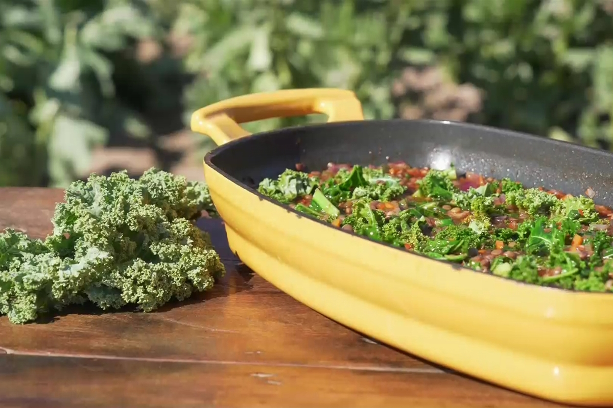

Guiso de Lentejas

El guiso de lentejas es un clasico en Argentina, probablemente mas aun en la region patagonica de donde soy oriundo.
Esto es dado las bajas temperaturas que se registran en el ano, sobretodo en invierno.
Ingredientes:
- Cebolla de verdeo, 4 unidades
- Aji molido, c/n
- Batata, 1 unidad
- Caldo, c/n
- Comino molido, c/n
- Diente de ajo, 1 unidad
- Kale, 1/2 unidad
- Lentejas remojadas, 500 g.
- Morron rojo, 1/2 unidad
- Pimenton dulce, c/n
- Cebolla morada, 2 unidades
- Vino tinto, 200 ml.
- Zanahoria
Paso a paso:
- En cacerola saltear cebolla morada y cebolla de verdeo picados, cocinar por 3 minutos.
- Agregar ajo, zanahoria, batata (todo picado pequeño) y cocinar por 5 minutos.
- Añadir lentejas remojadas, vino tinto, pimentón dulce, ají molido, comino molido y cubrir con caldo.
- Cocinar hasta tiernizar los vegetales y las lentejas.
- Incorporar ½ kale en trozo pequeños sin nervaduras, parte verde de cebolla de verdeo en finos aros y mezclar.
- Dejar que se ablande el kale y servir.